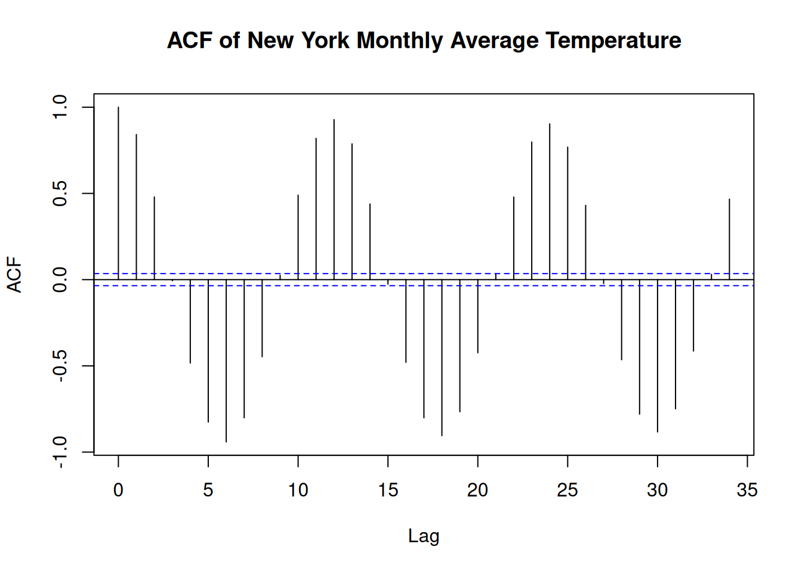

Chapter 3 TEST FOR AUTOCORRELATION AND TEMPORAL EFFECTS
Environment Data is not always stable or stationary over time or space and is frequently subjected to sustained or cyclical change to the affecting factors. These concepts will help us understand the temporal effects better;
Temporal Trends: refer to changes in a variable or phenomenon over time. Consider monitoring soil nitrogen levels in agricultural field over several years. There might be temporal rise of nitrogen immediately after application of nitrogen-based fertilizer and return back to almost the average state after time. Although there might be a general increase in soil nitrogen levels, but they won’t match the immediate spikes after fertilizer application.
Autocorrelation or serial correlation: is the correlation between data values of the same variable. Positive autocorrelation means that values close in time/space tend to be similar while negative autocorrelation means that they tend to differ.
Monotonic trend: this is a trend that is in one direction, either constantly upward or downwards. A good example are the levels of carbon dioxide(CO2) concentrations in the atmosphere, they have been consistently rising due to industrial activities and deforestation.
Cyclic or Seasonal trend refer to patterns that repeat at regular intervals such as daily ,hourly or annually. These trends are usually affected by natural cycles, human activities or climatic conditions. For instance, these trends are evident in phosphorous levels in water bodies that might increase during rainy seasons due agricultural runoff and decline during dry seasons.
When testing for autocorrelation and temporal effects the data samples are assumed to have values that are independent or uncorrelated, and identically or similarly distributed. The data are said to be autocorrelated or serially correlated when this assumption is violated.
These are the tests that are used to check for autocorrelation:
Sample Autocorrelation Function(ACF): used for a single time series where data is normally distributed.
Rank von Neumann ratio test used when the data samples evidence of nonnormality.
The complete block design ANOVA or Friedman test is used for multiple different data samples for instance testing the concentration of ground water contaminant from multiple monitoring wells at a site.
3.1 Test for Autocorrelation Using the Sample Autocorrelation Function
Before testing for autocorrelation using the ACF method, the data sample should be;
- normally distributed.
- stationary(that is, not trending).
- free of outliers.
- containing atleast 10 to 12 observations.
… And here is how ACf is computed.
- Arrange the data in lagged data pairs (\(x_{i}, x_{i + k}\)), for \(i\) = 1, 2, ….(\(n-k\)), where;
- \(n\) is the size of the data samples(number of data values therein).
- \(k\) is the lag. i.e number of sampling events dates separating one data value in the pair from the second value. For instance a lag of 1 shows that the two value pairs were collected in consecutive time intervals(e.g days) while lag shows that the data value pairs were collected every each time interval
- Calculate the sample Autocorrelation coefficient \[r_k = {{\sum^{n-k}_{i=1}(x_i-x^!)(x_{i+k}- x^!)}\over{\sum^n_{i=1}(x_i - x^!)^2}}\] where;
- \(n\) is the data sample size.
- \(k\) is the lag
- \(x^!\) is the data sample mean
- \(x_{i}, x_{i + k}\) are the components of the data pairs formed based on the lag.
If \(k\) = 1, the sample autocorrelation coefficient, \(r_1\) is referred to as the first order sample autocorrelation coefficient. If \(k\) = 2, \(r_2\) is the second order coefficient, and so on.
Lets breakdown the possible results of autocorrelation;
- \(r_0\) = 1: Autocorrelation at lag 0 is always one because a value is perfectly correlated with itself.
- Random Data: if the data is random, most autocorrelation coefficients will be close to zero, and will decrease further as the lag increases.
- Autocorrelated Data: If there’s autocorrelation, some coefficients(\(r_k\)) will be significantly larger than zero, but their strength decreases with higher lags.
- Trend in data: If there is a trend, coefficients wont diminish, showing persistent correlation.
As a summary, the normally distributed data, \(r_k\) should be close to zero if there is no correlation. At a 95% confidence level, autocorrelation is insignificant if no \(r_k\) exceeds the threshold \(2\over{\sqrt{n}}\). There result of each autocorrelation are therefore plotted in a correlogram and the confidence limits are show as the horizontal lines.
Try it!
Climate and weather data are central to ecological research, helping us understand environmental trends and variability. In this exercise, you’ll examine whether daily temperature data from Melbourne exhibit autocorrelation over time. Autocorrelation indicates that today’s temperature might be correlated with yesterday’s, the day before, and so on. Detecting significant autocorrelation is important because it affects how we model and predict future climate patterns.
You are required to retrieve the daily Temperature of Melbourne and save it as a csv file. Formulate the hypothesis;
- Null hypothesis: The daily minimum temperature series is random(i.e there is no significant autocorrelation)
- Alternate hypothesis: The daily temperature time series exhibits significant autocorrelation (i.e., past values influence future values).
Perform the analysis with R
# Load necessary libraries
library(readr)
library(ggplot2)
# Load the data set
melbourne_temp <- read_csv("data/melboune-daily-temperature.csv")## Warning: One or more parsing issues, call `problems()` on
## your data frame for details, e.g.:
## dat <- vroom(...)
## problems(dat)## Rows: 3651 Columns: 2
## ── Column specification ─────────────────────────
## Delimiter: ","
## chr (2): Date, Daily minimum temperatures in Melbourne, Australia, 1981-1990
##
## ℹ Use `spec()` to retrieve the full column specification for this data.
## ℹ Specify the column types or set `show_col_types = FALSE` to quiet this message.## spc_tbl_ [3,651 × 2] (S3: spec_tbl_df/tbl_df/tbl/data.frame)
## $ Date : chr [1:3651] "1981-01-01" "1981-01-02" "1981-01-03" "1981-01-04" ...
## $ Daily minimum temperatures in Melbourne, Australia, 1981-1990: chr [1:3651] "20.7" "17.9" "18.8" "14.6" ...
## - attr(*, "spec")=
## .. cols(
## .. Date = col_character(),
## .. `Daily minimum temperatures in Melbourne, Australia, 1981-1990` = col_character()
## .. )
## - attr(*, "problems")=<externalptr># Convert the 'Date' column to Date format.
melbourne_temp$Date <- as.Date(melbourne_temp$Date, format = "%Y-%m-%d")
# Rename the temperature column
names(melbourne_temp)[names(melbourne_temp) == 'Daily minimum temperatures in Melbourne, Australia, 1981-1990'] <- 'Temperature'
# Convert to numeric
melbourne_temp <- transform(melbourne_temp, Temperature = as.numeric(Temperature))## Warning in eval(substitute(list(...)), `_data`, parent.frame()): NAs introduced
## by coercion# Remove rows with missing values
melbourne_temp <- na.omit(melbourne_temp)
# Sort data by date if not already sorted
melbourne_temp <- melbourne_temp[order(melbourne_temp$Date), ]
# Create a time series object (assuming daily data; adjust the 'frequency' parameter if needed)
# Here, we assume the data is daily, so frequency = 365
temp_ts <- ts(melbourne_temp$Temp, frequency = 365)
# Plot the time series to visualize trends
plot(temp_ts, main = "Daily Temperature Time Series (Melbourne)",
xlab = "Time", ylab = "Temperature (°C)")# Compute and plot the Sample Autocorrelation Function (ACF)
acf(temp_ts, main = "ACF of Melbourne Daily Temperature")The results show the time series of daily temperature in Melbourne and its corresponding autocorrelation function (ACF). There is a cyclic trends in temperature over time and the ACF plot suggests strong autocorrelation at shorter lags, indicating a temporal dependency in the data.
3.2 An Example on Site-Wide Temporal Effects
Analysis of Site-Wide Temporal Effects on Groundwater Manganese Concentrations
Generate the data
# Load necessary libraries
library(dplyr)
# Set seed for reproducibility
set.seed(42)
# Generate synthetic manganese concentration data
Mn_values <- c(3.5, 2.8, 4.1, 3.9, 5.2, 4.8, 6.0, 5.7, # Well 1
3.2, 2.5, 3.8, 3.7, 5.0, 4.6, 5.8, 5.5, # Well 2
3.6, 3.0, 4.2, 4.0, 5.3, 4.9, 6.1, 5.8, # Well 3
3.3, 2.6, 3.9, 3.8, 5.1, 4.7, 5.9, 5.6) # Well 4
# Create a data frame
Mn2Data8 <- data.frame(
Mn = Mn_values,
Location = rep(c("Well1", "Well2", "Well3", "Well4"), each = 8),
Time = rep(paste0("Q", 1:8), times = 4)
)
# Convert factors
Mn2Data8$Location <- as.factor(Mn2Data8$Location)
Mn2Data8$Time <- as.factor(Mn2Data8$Time)
# Display the first few rows
head(Mn2Data8)## Mn Location Time
## 1 3.5 Well1 Q1
## 2 2.8 Well1 Q2
## 3 4.1 Well1 Q3
## 4 3.9 Well1 Q4
## 5 5.2 Well1 Q5
## 6 4.8 Well1 Q6Groundwater manganese concentrations have been monitored quarterly across four wells for a period of two years (eight quarters). The data set above, 2009), includes measurements from each well per quarter. The goal is to determine whether there is a site-wide temporal trend in manganese concentrations over time.
To establish whether a time trend exists, we must first check for spatial variability among the four wells. If the manganese concentrations do not significantly differ across wells, we can then assess whether concentrations change over time.
Here is the process that will be followed;
- Check for Spatial Variability (Homogeneity) by;
- Testing whether the means or medians of the four well datasets are statistically equal.
- Checking If the datasets show normality and homogeneity of variances, a two-way ANOVA without replication (Complete Block Design) is appropriate. Otherwise, the non-parametric Friedman test is used.
- Check for Temporal Trends by;
- Checking for a significant trend over time if no spatial variability is found.
- A two-way ANOVA is performed again, switching the roles of
TimeandLocationwhere initiallyTimewas the factor of interest andLocationas a blocking factor.
The ANOVA model follows the equation: \[{Y_{ij}}={\mu + \alpha_i + \beta_j + \epsilon_{ij}}\] Where:
- \(Y_{ij}\) is the Manganese concentration
- \(\mu\) is the overall mean
- \(\alpha_i\) represents the effect of the well (location)
- \(\beta_j\) represents the effect of time (quarter)
- \(\epsilon_{ij}\) is the error term
The hypothesis tests:
- For spatial variability: \(H_0:\mu_1=\mu_2=\mu_3=\mu_4\) (no significant difference between wells)
- For temporal trend \(H_0:\mu_{Q1}=\mu_{Q2}=...=\mu_{Q8}\)(no significant difference across quarters)
Check for variability
# Step 1: Check for Spatial Variability
Mn2.anova1 <- aov(Mn ~ Location + Time, data = Mn2Data8)
summary(Mn2.anova1)## Df Sum Sq Mean Sq F value Pr(>F)
## Location 3 0.57 0.189 125.5 1.44e-13 ***
## Time 7 35.63 5.091 3387.1 < 2e-16 ***
## Residuals 21 0.03 0.002
## ---
## Signif. codes: 0 '***' 0.001 '**' 0.01 '*' 0.05 '.' 0.1 ' ' 1Results;
- Location: p_value(denoted as Pr(>F) on the table above) is less than 0.05 - therefore there is a significant spatial variability
- Time: p_value is less than 0.05 - there is a siginfant temporal trend.
If there was no spatial variability we could have proceed to test the time trend. However, lets just proceed to show you how it is done.
Check the code below
# Step 2: Check for Temporal Effects
Mn2.anova2 <- aov(Mn ~ Time + Location, data = Mn2Data8)
summary(Mn2.anova2)## Df Sum Sq Mean Sq F value Pr(>F)
## Time 7 35.63 5.091 3387.1 < 2e-16 ***
## Location 3 0.57 0.189 125.5 1.44e-13 ***
## Residuals 21 0.03 0.002
## ---
## Signif. codes: 0 '***' 0.001 '**' 0.01 '*' 0.05 '.' 0.1 ' ' 1P-value is far much less than 0.05. The results confirm that manganese concentrations vary significantly over time.
3.3 TESTS FOR TREND
When working with data that has a time component (i.e., data collected at different points in time), a time series plot is a useful first step in exploring whether the values are randomly distributed or if a trend or pattern exists. If the plot suggests a trend, the next step is to determine whether this trend is statistically significant or just a random occurrence.
To assess this, we can use parametric or nonparametric methods, depending on whether the data meets certain assumptions such as normality, absence of outliers, and constant variance.
Parametric methods assume that the data follows a specific distribution (usually normal). These methods rely on parameters like mean and variance. A common parametric approach for trend detection is simple linear regression.
Nonparametric methods do not require the data to follow any particular distribution, making them more flexible. Two widely used nonparametric trend tests are:
- The Mann-Kendall test, which determines whether a trend exists but does not measure its magnitude.
- The Theil-Sen method, which not only detects trends but also estimates the slope (rate of change) of the trend line.
In some cases, external factors like temperature or streamflow rate can influence the trend results. If these factors are not accounted for, they may lead to incorrect conclusions. Therefore, it is important to adjust for such variables before performing trend analysis.
3.3.1 Parametric Test for Trends - Simple Linear Regression
Simple linear regression is a commonly used parametric method for detecting trends over time. It involves plotting data against time and fitting a best-fit regression line to model the relationship. The equation for this regression line is: \[Y_t = \beta_0 + \beta_1t + \epsilon_t\] Where:
- \(Y_t\) represents the observed data value at time \(t\)(e.g., pollutant concentration, species population, or temperature).
- \(\beta_0\) is the intercept (initial value at \(t=0\))
- \(\beta_1\) is the slope coefficient, indicating the rate of change over time.
- \(\epsilon_t\) represents random errors.
A statistically significant positive slope(\(\beta_1>0\)) suggests an increasing trend, while a negative slope(\(\beta_1<0\)) indicates a declining trend.
To determine if the trend is significant, we set up the following hypotheses:
- Null hypothesis(\(H_0\)): There is no trend; the true slope is zero (\(\beta_1=0\)).
- Alternative Hypothesis (\(H_a\)): A trend exists; the slope is not zero (\(\beta_1≠0\)).
The t-test is used to check the significance of \(\beta_1\): \[{t} = {{\hat\beta_1}\over{SE(\hat\beta_1)}}\] Where \(\hat\beta_1\) is the setimated slope and \(SE(\hat\beta_1)\) is its standard error. The p-value associated with this test determines whether we reject \(H_0\) at a given significance level \(\alpha\) (typically 0.05)
Here are the assumptions must be satisfied for valid results;
- Linearity: The trend should be approximately linear.
- Independence : Observations should be independent over time.
- Normality of Residuals: The residuals (differences between actual and predicted values) should follow a normal distribution.
- Homoscedacity: Variance of residuals should be constant over time.
- Sufficient Data Points: At least 8–10 observations are recommended.
Try it!: Detecting Trends in River Nitrate Levels
In ecological studies, trend analysis is often applied to environmental parameters such as nitrate concentration in rivers over time. The dataset below simulates nitrate levels (mg/L) measured monthly over several years.
## Loading required package: zoo##
## Attaching package: 'zoo'## The following objects are masked from 'package:base':
##
## as.Date, as.Date.numeric# Simulated ecological data: Nitrate levels in a river over time
set.seed(42)
time <- 1:120 # 10 years of monthly data
nitrate_levels <- 2 + 0.01 * time + rnorm(120, mean = 0, sd = 0.2) # Simulated increasing trend
# Create a data frame
data <- data.frame(time = time, nitrate = nitrate_levels)
# Fit linear regression model
model <- lm(nitrate ~ time, data = data)
# Summary of the regression
summary(model)##
## Call:
## lm(formula = nitrate ~ time, data = data)
##
## Residuals:
## Min 1Q Median 3Q Max
## -0.60476 -0.12832 0.01333 0.12895 0.54269
##
## Coefficients:
## Estimate Std. Error t value Pr(>|t|)
## (Intercept) 2.0145997 0.0382374 52.69 <2e-16 ***
## time 0.0098567 0.0005485 17.97 <2e-16 ***
## ---
## Signif. codes: 0 '***' 0.001 '**' 0.01 '*' 0.05 '.' 0.1 ' ' 1
##
## Residual standard error: 0.2081 on 118 degrees of freedom
## Multiple R-squared: 0.7324, Adjusted R-squared: 0.7301
## F-statistic: 323 on 1 and 118 DF, p-value: < 2.2e-16# Extract p-value and slope
slope <- coef(model)[2]
p_value <- summary(model)$coefficients[2,4]
# Decision based on p-value
alpha <- 0.05
if (p_value < alpha) {
print(paste("Significant trend detected with slope:", round(slope, 4)))
} else {
print("No significant trend detected.")
}## [1] "Significant trend detected with slope: 0.0099"# Plot the trend with regression line
ggplot(data, aes(x = time, y = nitrate)) +
geom_point(color = "blue", alpha = 0.5) +
geom_smooth(method = "lm", color = "red", se = FALSE) +
labs(title = "Trend Analysis of Nitrate Levels in River",
x = "Time (Months)", y = "Nitrate Concentration (mg/L)") +
theme_minimal()## `geom_smooth()` using formula = 'y ~ x'Here is how we interpret the regression output:
- Intercept\((\beta_0)\) = 2.0146 (baseline concentration)
- Slope\(\beta_1\) = 0.0099 (indicates an increasing trend in nitrate levels).
- p-value<0.001 (significant trend detected).
- R-squared = 0.7324, meaning 73.2% of the variability in nitrate concentration is explained by time.
This suggests that nitrate levels are increasing over time, which could indicate environmental pollution or agricultural runoff.
Practical Exercise
Using the Melbourne daily temperature(Used in Sample Autocorrelation Coeefficient Exercise), determine whether there is a statistically significant trend in temperature over time.
Solution
Formulate the hypotheses;
- Null hypothesis: There is no significant trend in temperature over time.
- Alternate hypothesis: There is a significant increasing or decreasing trend in temperature over time.
Here is the simple linear regression model; \[Temperatur = \beta_0 + \beta_1.Time + \epsilon\] where \(\beta_1\) is the slope coefficient.
# data set - melbourne_temp(reuse the variable name from the previous exercise)
# Calculate time difference since the beginning
melbourne_temp$Time <- as.numeric(as.Date(melbourne_temp$Date) - min(as.Date(melbourne_temp$Date))) # Convert Date to numerical
# Visualize the time series
ggplot(melbourne_temp, aes(x = Date, y = Temperature)) +
geom_line() +
labs(title = "Daily Temperature Time Series (Melbourne)", y = "Temperature (°C)", x = "Date")# Parametric Test for Trend: Linear Regression
model <- lm(Temperature ~ Time, data = melbourne_temp)
summary(model) # Get regression output##
## Call:
## lm(formula = Temperature ~ Time, data = melbourne_temp)
##
## Residuals:
## Min 1Q Median 3Q Max
## -11.1518 -2.8964 -0.1497 2.7674 15.1686
##
## Coefficients:
## Estimate Std. Error t value Pr(>|t|)
## (Intercept) 1.112e+01 1.345e-01 82.628 <2e-16 ***
## Time 3.904e-05 6.380e-05 0.612 0.541
## ---
## Signif. codes: 0 '***' 0.001 '**' 0.01 '*' 0.05 '.' 0.1 ' ' 1
##
## Residual standard error: 4.062 on 3645 degrees of freedom
## Multiple R-squared: 0.0001028, Adjusted R-squared: -0.0001716
## F-statistic: 0.3746 on 1 and 3645 DF, p-value: 0.5406# Plot regression line
ggplot(melbourne_temp, aes(x = Time, y = Temperature)) +
geom_point(alpha = 0.5) +
geom_smooth(method = "lm", col = "red") +
labs(title = "Linear Trend in Melbourne's Temperature", x = "Time", y = "Temperature (°C)")## `geom_smooth()` using formula = 'y ~ x'The p-value(statistical significance) is 0.5406 which above 0.05, therefore the null hypothesis(There is no significant trend in temperature over time) is accepted. Furthermore the slope coefficient(\(\beta_1\)) is \(3.904 \times 10^{-5}\)(which is close to zero) suggests that temperature does not change significantly over time.
We can conclude that there is no change in temperature over time.
________________________________________________________________________________
3.3.2 Nonparametric Test for Trends
3.3.2.1 Mann–Kendall Test and Seasonal Mann–Kendall Test
In ecological statistics, detecting trends in environmental data is crucial for understanding changes over time. However, traditional parametric tests such as linear regression require data to meet assumptions like normality and homoscedasticity, which are often violated in ecological datasets. Nonparametric tests like the Mann-Kendall (MK) test and Seasonal Mann-Kendall (SMK) test offer robust alternatives that do not assume any specific data distribution.
3.3.2.1.1 Mann-Kendall Trend Test
The Mann-Kendall test is a rank-based nonparametric test used to detect a monotonic trend in time-series data, whether linear or nonlinear.
Given a data set $ X = {x_1, x_2, …, x_n} $, the Mann-Kendall test examines all possible pairs $ x_i, x_j $ where $ i < j $, and assigns a score based on their relative magnitudes:
\[S = \sum_{i=1}^{n-1} \sum_{j=i+1}^{n} \text{sgn}(x_j - x_i)\]
where the sign function is defined as:
\[\text{sgn}(x_j - x_i) = \begin{cases} +1, & \text{if } x_j > x_i \\ 0, & \text{if } x_j = x_i \\ -1, & \text{if } x_j < x_i \end{cases}\]
A positive \(S\) indicates an increasing trend, while a negative \(S\) suggests a decreasing trend.
For large samples (\(n>10\)), the test statistic \(S\) follows an approximately normal distribution with mean 0 and variance:
\[{Var(S)} = {{n(n-1)(2n-5)- \sum_t t(t-1)(2t+5)}\over{18}}\] Where t represents the number of tied ranks in the data set.
The standardized test statistic (Z-score) is given by:
\[{Z} = \begin{cases} {{s-1}\over{Var(S)}}, \text if \space S>0\\ 0, \text if \space S = 0\\ {{s-1}\over{Var(S)}}, \text if \space S<0 \end{cases}\]
Lets formulate the hypothesis;
- Null hypothesis(\(H_0\)): No trend in the data.
- Alternate Hypothesis(\(H_1\)): Presence of a monotonic trend
- Decision Rule: Reject $H_0 if |Z|>Z_{a/2} $ where \(Z_{a/2}\) is the critical value from the normal distribution for a given significance level(e.g, 1.96 for \(\alpha = 0.05\))
Try it: Analysis for the monthly average temperature
A package trend is needed for this practical and can be installed by;
install.packages("trend")Run the analysis
library(trend)
# Example dataset: Monthly average temperature
data <- c(12.4, 12.8, 13.1, 12.9, 13.5, 13.7, 13.9, 14.0, 14.1, 14.5, 14.8, 15.0)
time <- seq(2000, 2011)
# Perform Mann-Kendall Test
mk_result <- mk.test(data)
print(mk_result)##
## Mann-Kendall trend test
##
## data: data
## z = 4.3201, n = 12, p-value = 1.56e-05
## alternative hypothesis: true S is not equal to 0
## sample estimates:
## S varS tau
## 64.000000 212.666667 0.9696973.3.2.1.2 Seasonal Mann-Kendall (SMK) Test
Environmental data often exhibit seasonality, meaning the trend might be masked by cyclic variations. The Seasonal Mann-Kendall test adjusts for seasonality by performing the Mann-Kendall test on subsets of data corresponding to different seasons.
Here is how to perform it;
- Partition data into seasonal subsets (e.g, monthly data grouped by month across years)
- Apply the Mann-Kendall test to each seasonal subset/.
- Sum the S-values from each season to get an overall trend statistic
Try it! Monthly pollutant concentration across five years
A package Kendall is required for this analysis and can be installed by;
install.packages("Kendall")Run the analysis
# Load the library
library(Kendall)
# Example dataset: Monthly pollutant concentrations across 5 years
set.seed(123)
dates <- seq(as.Date("2010-01-01"), as.Date("2014-12-01"), by="month")
data_values <- rnorm(length(dates), mean=50, sd=5)
seasonal_data <- data.frame(Date=dates, Value=data_values)
# Perform Seasonal Mann-Kendall Test
#smk_result <- SeasonalMannKendall(seasonal_data$Value ~ #as.POSIXlt(seasonal_data$Date)$mon + #as.POSIXlt(seasonal_data$Date)$year)
#print(smk_result)Practical Exercise
Using the Melbourne daily temperature data set, perform the following non-parametric tests to find if there is a significant trend in temperature over time;
- Mann-Kendall Test
- Seasonal Mann-Kendall Test
Solution
- Mann-Kendall Test
# Load the required library
library(Kendall)
# Perform the test
mk_test <- MannKendall(melbourne_temp$Temperature)
print(mk_test)## tau = 0.0121, 2-sided pvalue =0.27545\(\tau\) = 0.0121 is small thus suggesting a slight increasing trend, though very weak. A value closer to -ve or +ve 1 would indicate a strong trend. The p-value is 0.27545(which is above 0.05) therefore we fail to reject the null hypothesis. This means there is no significant trend detected in the Melboourne. Lets try working on the Seasonall Mann-Kendall Test.
- Seasonal Mann-Kendall Test
# Install the package if not already installed
# install.packages("trend")
# Load the package
library(trend)
# Convert data to time series format
melbourne_ts <- ts(melbourne_temp$Temperature, frequency = 365)
# Perform Seasonal Mann-Kendall Test
smk_test <- smk.test(melbourne_ts)
print(smk_test)##
## Seasonal Mann-Kendall trend test (Hirsch-Slack test)
##
## data: melbourne_ts
## z = 2.8042, p-value = 0.005044
## alternative hypothesis: true S is not equal to 0
## sample estimates:
## S varS
## 598.00 45324.67Alternatively, you can use the Kendall package
# install.packages("Kendall")
library(Kendall)
# Convert time into a time series object
melbourne_ts <- ts(melbourne_temp$Temperature, frequency = 365)
# Perform Seasonal Mann-Kendall Test
smk_test <- SeasonalMannKendall(melbourne_ts)
print(smk_test)## tau = 0.0367, 2-sided pvalue =0.0049713After taking a closer looking using the Seasonal Mann-Kendall test we find that;
- The test statistic (z) = 2.802 – a positive value that suggests an increasing trend in temperature.
- P-value of less than 0.05 – Meaning that we reject the null hypothesis.
- S (Mann-Kendall Statistic) = 598 – A positive S value further confirms an upward trend.
It can be conclude that since p-value is low (p < 0.05), we reject the null hypothesis and conclude that there is a significant increasing trend in Melbourne’s temperature over time.
________________________________________________________________________________
3.3.2.2 Theil–Sen Trend Test
When studying climate change, pollution levels, or species populations, scientists often need to determine whether a trend exists over time. The Theil-Sen estimator is a robust, nonparametric method for estimating trends, making it perfect for ecological data, where outliers and missing values (non-detects) are common!
Theil-sen is preferred since;
- Robust to Outliers – Unlike least-squares regression, Theil-Sen takes the median of all slopes, making it resistant to extreme values.
- No Normality Assumptions – Works with non-normally distributed data (great for environmental datasets!).
- Handles Missing Data – Can be used with censored (non-detect) values using the
cenken()function in R.
try it!
Analyzing Water Quality Trends
In this exercise, we will analyze nitrate concentrations in a river over time to detect pollution trends. We will simulated data.
Lets break it down step by step
# Install required packages if not already installed
#install.packages("NADA") # For dealing with non-detects
#install.packages("tidyverse") # For data manipulation & visualization
# Load libraries
library(NADA) ##
## Attaching package: 'NADA'## The following object is masked from 'package:stats':
##
## cor## ── Attaching core tidyverse packages ────────────
## ✔ forcats 1.0.0 ✔ stringr 1.5.1
## ✔ lubridate 1.9.4 ✔ tibble 3.2.1
## ✔ purrr 1.0.2 ✔ tidyr 1.3.1## ── Conflicts ─────────── tidyverse_conflicts() ──
## ✖ dplyr::filter() masks stats::filter()
## ✖ dplyr::lag() masks stats::lag()
## ✖ dplyr::select() masks MASS::select()
## ℹ Use the conflicted package (<http://conflicted.r-lib.org/>) to force all conflicts to become errors- Simulate Nitrate Concentration Data
Imagine we are monitoring nitrate levels (mg/L) in a river over 10 years (2010-2019). Some measurements were below the detection limit (ND = non-detects).
# Create a dataset of nitrate levels over time
data <- tibble(
Year = 2010:2019,
Nitrate = c(2.1, 2.5, 2.3, 2.7, 2.8, 3.0, 3.5, 3.8, NA, 4.2), # Some missing values
Detection_Limit = c(NA, NA, NA, NA, NA, NA, NA, 0.5, 0.5, NA) # Limit for ND values
)
# View data
print(data)## # A tibble: 10 × 3
## Year Nitrate Detection_Limit
## <int> <dbl> <dbl>
## 1 2010 2.1 NA
## 2 2011 2.5 NA
## 3 2012 2.3 NA
## 4 2013 2.7 NA
## 5 2014 2.8 NA
## 6 2015 3 NA
## 7 2016 3.5 NA
## 8 2017 3.8 0.5
## 9 2018 NA 0.5
## 10 2019 4.2 NASome values are missing (NA), and some are below the detection limit (ND).
- Perform the Theil-Sen Estimation
To compute the trend, we use cenken(), which handles both detected and non-detect values.
# Replace non-detects (NDs) with detection limits
data$Nitrate[is.na(data$Nitrate)] <- data$Detection_Limit[is.na(data$Nitrate)]
# Apply Theil-Sen estimator
#result <- cenken(Year, Nitrate, data = data)
# Print result
#print(result)Lets visualize the trend
# Extract slope and intercept
slope <- result$coefficients[2]
intercept <- result$coefficients[1]
# Create trend line equation
data <- data %>%
mutate(Predicted_Nitrate = intercept + slope * Year)
# Plot
ggplot(data, aes(x = Year, y = Nitrate)) +
geom_point(color = "blue", size = 3) + # Actual data points
geom_line(aes(y = Predicted_Nitrate), color = "red", size = 1) + # Theil-Sen trend
labs(title = "Trend of Nitrate Levels in River (2010-2019)",
subtitle = paste("Slope:", round(slope, 3), "mg/L per year"),
x = "Year",
y = "Nitrate Concentration (mg/L)") +
theme_minimal()Practical Exercise
Finally, lets repeat the analysis(Melbourne daily temperature performed in the exercises earlier). Thjis time you will be required to perform the Theil-Sen Slope Estimator.
Solution
# Perform the Theil-Sen Slope Estimator
theil_sen <- sens.slope(melbourne_temp$Temperature)
print(theil_sen)##
## Sen's slope
##
## data: melbourne_temp$Temperature
## z = 1.0906, n = 3647, p-value = 0.2754
## alternative hypothesis: true z is not equal to 0
## 95 percent confidence interval:
## -4.861449e-05 2.023472e-04
## sample estimates:
## Sen's slope
## 6.736275e-05The Theil-sen slope estimate = \(6.736 \times 10^{-5}\) indicates a very small positive value that suggests a slight increasing trend. Contrary to the Seasonal Mann-Kendall test, the p-value = 0.2754(above 0.05) indicating that we fail to reject the null hypothesis and there is trend is not statistically significant.
Taking a closer look, the Seasonal Mann-Kendall found a significant trend while Theil-Sen test failed to find, this discrepancy might be due to;
- Seasonal effects influencing the Mann-Kendall test but having less impact in the Theil-Sen slope.
- High variance in temperature data, reducing the power of the Theil-Sen test.
________________________________________________________________________________
3.4 Hands-On Exercises
You will be required to download the Global Land Temperature by City data that is hosted in Kaggle from here. The data provides historical monthly average average temperatures covering multiple countries and cities in the world.
Use the data set to find the solutions to the problems below. Note: We will focus on the New York City.
- Load the data set, handle any missing values appropriately and sort the data chronologically.
- Determine if there is any autocorrelation in the historical monthly temperature. This can be achieved by;
- Compute and plot the ACF of the temperature time series.
- Identify significant lags where autocorrelation exists in the plot.
- Assess if there is linear trend in the temperature data over time by;
- Fitting a simple linear linear regression model with time as the predictor and temperature as the response variable.
- Examining the resultant slope from the regression line and the slope coefficient to determine the direction and significance of the trend.
- You will perform different non-parametric test for trends as instructed below;
- Apply the Mann-Kendall test to the time series to test for monotonic trend in the temperature. Determine of there is significant upward or downward trend.
- Account for seasonality in the data while testing for trends using the Seasonal Mann-Kendall test to the monthly temperature data.
- Use the Theil-Sen estimator to determine the median slope of the temperature trend to estimate the slope of a trend in the presence of outliers. Evaluate the magnitude and direction of the trend.
Solution
- Load the data set, handle any missing values appropriately and sort the data chronologically.
library(dplyr)
# Load data
data <- read.csv("data/global_land_temperature_by_city/data.csv")
# Handle missing values
data <- na.omit(data)
# Sort the data chronologically for the New York City
sorted_data <- data%>%
filter(City == "New York") %>%
mutate(date = as.Date(dt)) %>%
select(date, AverageTemperature) %>%
arrange(date)- Determine if there is any autocorrelation in the historical monthly temperature. This can be achieved by;
- Compute and plot the ACF of the temperature time series.
- Identify significant lags where autocorrelation exists in the plot.
# Test for Autocorrelation using ACF
acf(sorted_data$AverageTemperature,
main = "ACF of New York Monthly Average Temperature")
- Assess if there is linear trend in the temperature data over time by;
- Fitting a simple linear linear regression model with time as the predictor and temperature as the response variable.
- Examining the resultant slope from the regression line and the slope coefficient to determine the direction and significance of the trend.
# Parametric Test for Trends
## Simple Linear Regression
sorted_data <- sorted_data %>%
mutate(time = as.numeric(date - min(date))) # get difference in days
lm_model <- lm(AverageTemperature ~ time, data = sorted_data)
summary(lm_model)##
## Call:
## lm(formula = AverageTemperature ~ time, data = sorted_data)
##
## Residuals:
## Min 1Q Median 3Q Max
## -18.9985 -8.5816 0.0129 8.7943 20.4073
##
## Coefficients:
## Estimate Std. Error t value Pr(>|t|)
## (Intercept) 8.619e+00 3.475e-01 24.805 < 2e-16 ***
## time 1.773e-05 5.994e-06 2.959 0.00311 **
## ---
## Signif. codes: 0 '***' 0.001 '**' 0.01 '*' 0.05 '.' 0.1 ' ' 1
##
## Residual standard error: 9.239 on 3117 degrees of freedom
## Multiple R-squared: 0.0028, Adjusted R-squared: 0.00248
## F-statistic: 8.753 on 1 and 3117 DF, p-value: 0.003115Remember add a regression line to a scatter plot
- You will perform different non-parametric test for trends as instructed below;
- Apply the Mann-Kendall test to the time series to test for monotonic trend in the temperature. Determine of there is significant upward or downward trend.
# Load libraries
library(Kendall)
# Perform the test
mk_test <- MannKendall(sorted_data$date)
print(mk_test)## tau = 1, 2-sided pvalue =< 2.22e-16- Account for seasonality in the data while testing for trends using the Seasonal Mann-Kendall test to the monthly temperature data.
# Seasonal Mann Kendall test
smk_test <- SeasonalMannKendall(ts(sorted_data$AverageTemperature, frequency = 12))
print(smk_test)## tau = 0.154, 2-sided pvalue =< 2.22e-16- Use the Theil-Sen estimator to determine the median slope of the temperature trend to estimate the slope of a trend in the presence of outliers. Evaluate the magnitude and direction of the trend.
library(trend)
# Theil-Sen Trend test
ts_test <- sens.slope(sorted_data$AverageTemperature)
print(ts_test)##
## Sen's slope
##
## data: sorted_data$AverageTemperature
## z = 3.179, n = 3119, p-value = 0.001478
## alternative hypothesis: true z is not equal to 0
## 95 percent confidence interval:
## 0.0001963213 0.0008278986
## sample estimates:
## Sen's slope
## 0.0005120968________________________________________________________________________________